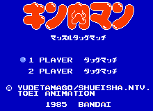

Kinikuman (NESA)

This is a wrestling game. NESA does not run this game well. It chops up the
screen funny, but the game is still playable. Kinikuman was released in
the US as Muscles. Beyond that, I do not know much about this anime.
Return to Emulator Table of Contents
Last Modified 19 Oct 1996
Created 19 Oct 1996
Luis A. Cruz
cruzl@ccs.neu.edu